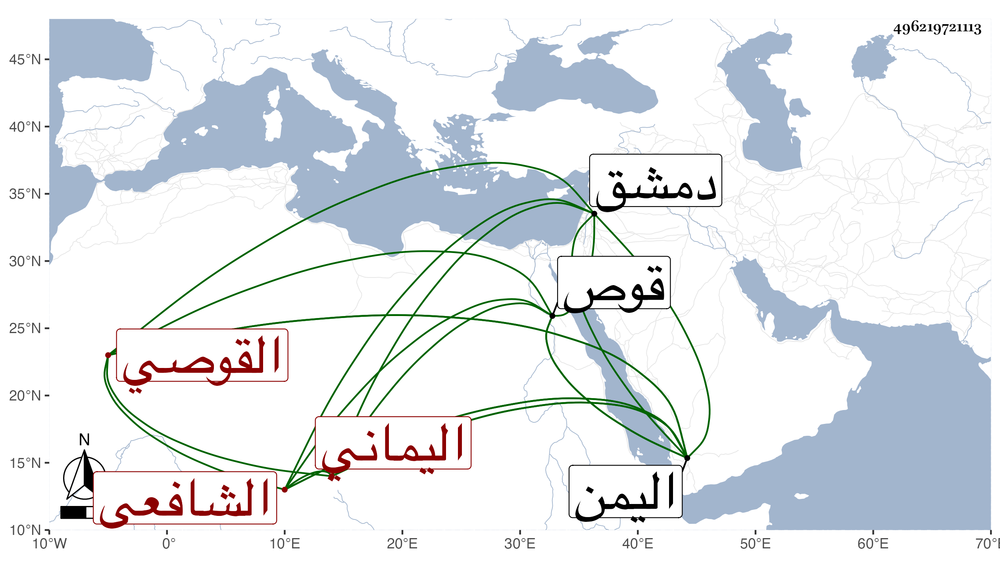

0902Sakhawi.DawLamic.ITO20230111-ara1.EIS1600.496219721113
Biography ID: 496219721113
أحمد بن إبراهيم بن أحمد شهاب الدين القوصي اليماني الشافعي ويعرف بابن كان أبوه مشهورا من أهل قوص ونشأ هو بها وولي بها عدة مناصب ثم دخل اليمن فقطنها وناب في بعض بلادها عن المجد الشيرازي وكان كثير الفكاهة قاله شيخنا في معجمه قال وذكر لي أنه سمع من محيي الدين بن الرحبي بدمشق فسمعت منه حديثا واحدا بمدينة المهجم علقته في البلدانيات وحج معنا في سنة ست وثمانمائة ثم رجع إلى اليمن وبلغنا أنه حج أيضا . قلت وهو في عقود المقريزي باختصار وهو غير أحمد بن عبد الله القوصي المصري الآتي فاتفقا في الاسم وافترقا في النسب والبلد .
